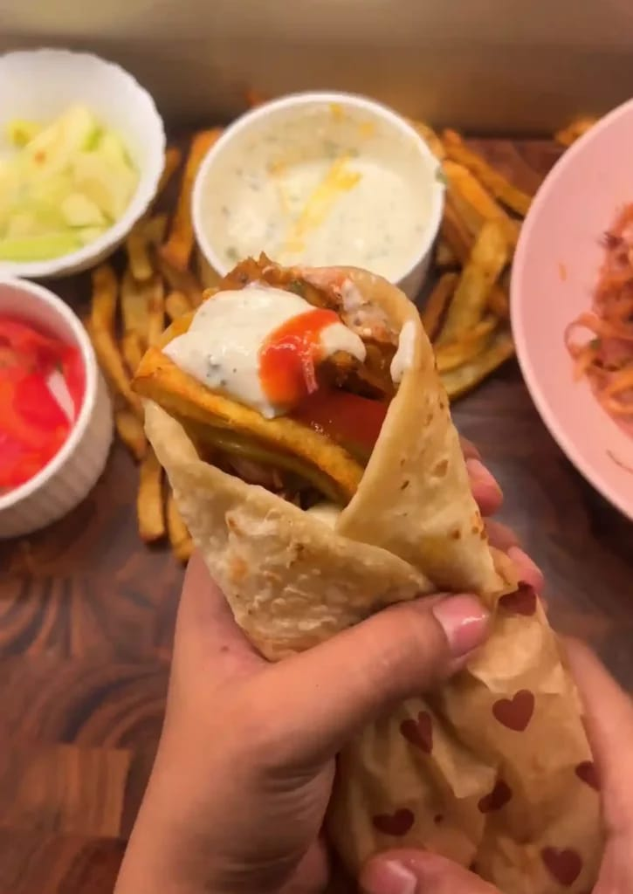

Chicken Shawarma

Description:
Chicken Shawarma is a popular Middle Eastern dish made with marinated chicken that is slow-cooked on a vertical rotisserie. The chicken is typically seasoned with a blend of spices, including cumin, paprika, and garlic, and served in pita bread with fresh vegetables and sauces like tahini or garlic sauce.
Ingredients:
For the chicken:
- 2 lb. boneless chicken (cut into strips)
- 1 tsp salt
- 1 tsp black pepper
- 1 tsp paprika
- 1 tsp garlic powder
- 1 tsp onion powder
- ¼ tsp cumin powder
- 1 tsp turmeric
- 1 tsp chili powder
- 2 tbsp tomato puree or tomato paste
- 2–3 tbsp olive oil
- Juice of ½ lemon
For garlic sauce:
- 1 cup natural yogurt
- ½ cup mayonnaise
- 2 tsp garlic powder
- 1 tsp black pepper
- ½ tsp salt
- Juice of ½ lemon
For Sumac Onions (Optional):
- 1 red onion, thinly sliced
- 1 tbsp parsley, chopped
- Juice of ½ lemon
- 1 tsp sumac
For assembly:
- 5–6 pita breads
- Cooked chicken
- Sliced cucumbers
- Sliced tomatoes
- Pickled cucumbers
- Harissa or sriracha sauce
- Garlic mayonnaise or white sauce
- French fries
Instructions:
-
Grab a bowl and stir together the olive oil, tomato paste, lemon juice, and all your spices—salt, black pepper, paprika, garlic powder, onion powder, cumin, turmeric, and chili powder. Once that’s all mixed, throw in the chicken strips and give everything a good toss until the chicken’s fully coated. Let it sit and soak up all that flavor for at least 30 minutes… or longer if you’ve got the time (the longer, the tastier!).
-
Heat a pan over medium-high heat and add a little olive oil. Toss in the marinated chicken and cook it for about 7 to 10 minutes, stirring now and then, until it’s golden and cooked through. Let it get a bit of that caramelized goodness, just make sure not to crowd the pan, or it’ll steam instead of sear. Once it’s done, set it aside.
-
In a bowl, mix together the yogurt, mayo, garlic powder, salt, black pepper, and a squeeze of lemon juice. Stir it until it’s nice and smooth, then pop it in the fridge until you’re ready to serve. This sauce is cool, creamy, and the perfect way to balance out the spice, it brings everything together in the best way.
-
Toss the thinly sliced onions with fresh parsley, a sprinkle of sumac, and a squeeze of lemon juice. Let them sit for a few minutes so they can soak up all that tangy, vibrant flavor. They’ll add a bright pop of color and a zesty kick to your wrap.
-
Fry up some frozen or freshly cut potatoes in hot oil until they’re golden and crispy. Let them drain on paper towels, then hit them with a pinch of salt while they’re still hot. Crispy fries like these are a must, they bring that classic street-style shawarma vibe to life.
-
Warm your pita bread in a pan or on a skillet until it’s soft and pliable. Now it’s time to build your wrap: start with a generous layer of the chicken, then add some sliced cucumbers and tomatoes, a few pickled cucumbers for that tangy crunch, and a drizzle of harissa or sriracha if you like some heat. Spoon on some garlic mayo or that cool white sauce, and don’t forget a handful of those crispy fries. If you made the sumac onions, toss those in too for an extra zing. Then fold, roll, or wrap it all up, and serve it hot!
Go to back to home-page